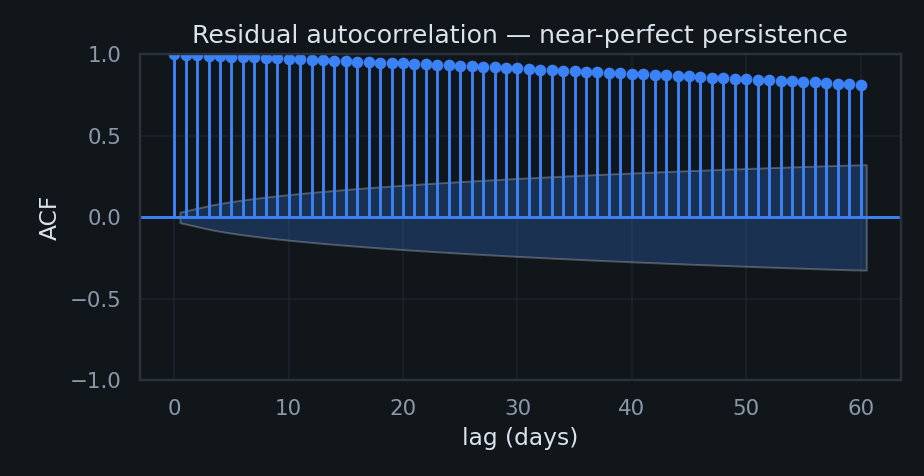

One line across six orders of magnitude
The Bitcoin power-law model (Santostasi; Burger) says price grows as a fixed power of Bitcoin's age, not exponentially:
where $t$ = days since the genesis block (2009-01-03). A power law is a straight line in log–log space; the slope is the exponent $n$. Contrast the exponential $P = A e^{kt}$, which is a straight line in log–linear space and implies a constant doubling time — something Bitcoin has never had.
The exponent is real — but far less precise than it looks
"R² = 0.94 sounds decisive. What's the actual uncertainty on the exponent?"
Ordinary least squares gives a tight-looking standard error, but it assumes independent observations. Bitcoin's daily deviations from trend are almost perfectly autocorrelated (lag-1 ρ ≈ 0.998) — consecutive days carry nearly the same information, so the effective sample size is a tiny fraction of the ~3,650 days. Naive SEs are meaningless here.
The honest fix is two-fold: Newey–West (HAC) standard errors, and a moving-block bootstrap that resamples blocks of days to preserve the autocorrelation. Both blow the confidence interval wide open:
High R² between two trending series proves almost nothing
"Regress any rising series on time and you get R² > 0.9. How do we know this isn't that?"
Granger & Newbold's classic warning: two unrelated trending series routinely produce a high R² and a near-zero Durbin–Watson. Bitcoin's fit shows exactly that fingerprint — — the prosecution's strongest single fact.
The honest nuance the internet usually botches: the regressor here, $\log_{10}(\text{days})$, is a deterministic clock, not a stochastic trend. So formal cointegration is technically undefined, and calling the fit "spurious" in the strict Granger–Newbold sense is wrong. The defensible question is narrower and sharper: are the residuals stationary? If not, price never reliably mean-reverts to the line, and OLS inference is invalid (Lens 1).
ADF null = unit root (non-stationary); KPSS null = stationary. They are designed to disagree — quoting one alone is cherry-picking.


Power law vs. exponential vs. stretched-exp vs. logistic
"If you let other growth curves compete fairly, does the power law actually win?"
Four models, same data, same log-price space, ranked by AIC (which penalizes extra parameters). The result is a genuinely split decision:
Full history · 2010–2026
Recent only · 2016–2026

How fast does Bitcoin snap back to the line?
"If the residual is a signal, what's its half-life — and where are we now?"
Model the deviation $r(t)=\log_{10}P-\text{trend}$ as an Ornstein–Uhlenbeck process, $dr=-\lambda r\,dt+\sigma\,dW$, with half-life $\ln 2/\lambda$. Fitting an AR(1) to the residuals gives the speed of reversion and lets us standardize today's deviation into a z-score "oscillator."

Does a power-law backbone coexist with log-periodic bubbles?
"Sornette says bubbles accelerate super-exponentially with log-periodic wobbles. Can we see one?"
The Log-Periodic Power-Law Singularity model fits a critical time $t_c$ — a finite-time singularity the price accelerates toward before correcting:
Fitted to the 2020–2021 run-up (Filimonov–Sornette reduction, bounded search):
Is the exponent a constant, or does it drift?
"A law has a stable parameter. Does Bitcoin's exponent hold across halvings?"
Chow test for a structural break in the exponent at each halving. p < 0.05 ⇒ the slope shifts.
Diminishing returns are a feature, not a bug
"Each cycle's gains are smaller. Does that break the power law — or confirm it?"
A constant log-log slope mathematically requires arithmetic returns to shrink over calendar time: holding $d\log P / d\log t = n$ fixed means each price doubling takes ever longer. The data agree emphatically:

What survives scrutiny — and what doesn't
✓ Holds up
- As a descriptive growth envelope, the log–log trend is excellent and spans six orders of magnitude.
- The exponential model is decisively rejected — Bitcoin's doubling time is not constant.
- Diminishing cycle returns are internally consistent with a decelerating power law.
- A weak, slow mean reversion to the trend is detectable (~9-month half-life).
- LPPLS shows real log-periodic structure within bubble episodes (as a hedged diagnostic).
✗ Does not survive
- "High R² proves a law." It's mechanical against any monotone clock — worthless as evidence.
- A precise exponent. Honest CI is ≈[4.3, 6.2], not 5.8 ± 0.01.
- "Power law beats all models." A logistic fits the recent decade better; the data can't separate them.
- A stable parameter. The exponent breaks at halvings (Chow) and drifts.
- LPPLS as a crash-date predictor, and the strict "spurious-regression" label (cointegration is undefined vs. a deterministic clock).